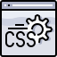
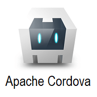
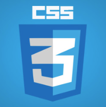
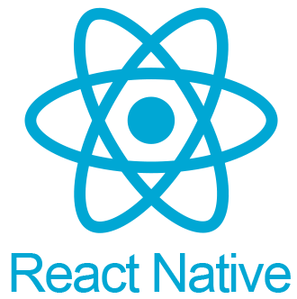
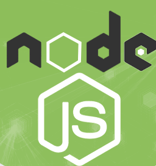

Stanisław Laskowski
Dane kontaktowe:
Website


stanislawlaskowski87@gmail.com
Telefon
504 940 279
Miejscowość
Poznań
Aktualnie tworzę w:
HTML5

CSS
JavaScript

Apache Cordova

React
Obecnie skupiony na:

CSS3
React
Niebawem i trochę później:
Redux

React-native

Node.js
front-end and...
Zaczynając od końca, to na front-endzie zaczyna brakować mi... znajomości back-endu. Chciałbym już mieć opanowany NODE.JS, ale mam doskonałą świadomość, że na "froncie" jeszcze sporo, sporo nauki przede mną i sporo "połamanych klawiatur". Ustaliłem sobie (imho) prawidłową ścieżkę opanowywania kolejnych technologii (na razie frontendowych). Podchodzę do kodowania z dużą dawką pokory, ale też z nieustępliwością. Branża cały czas się rozwija, powstają nowe technologie, a istniejące nieustannie się zmieniają. Kto kilka lat temu stawiając stronę w React na komponentach "klasowych" zakładał, że już dzisiaj będzie miał "legacy code"? Nie ja, bo wówczas branżą w ogóle się nie zajmowałem. Jestem newbie w programowaniu i od samego początku kodowania przyzwyczajony do zmian, które obserwowałem w kodzie, pochodzącym z różnych okresów. Nie mam "starych przyzwyczajeń", których będę się kurczowo trzymał. Rozpoczęcie kodowania niedawno, pokazuje mi jak na dłoni ewolucje technologii frontendowych i daje - cytując sformułowanie Jeffa Bezosa - Beginner’s Mind.
Naukę programowania na poważnie rozpocząłem ponad rok temu (kwiecień 2021). Właściwie, to nawet nie programowania, co pierwotnie HTML. Jest to jednak nauka bardzo intensywna. Pracując jako "ochroniarz siedzący" w dzień oglądałem tutoriale na smartfonie, a w nocy pisałem na laptopie służbowym. Unikam jak ognia materiałów w języku polskim. Nie tylko po to, by podszkolić się z angielskiego, ale przede wszystkim, by chłonąć mentalność innych nacji. Nie tylko Anglosasów. To trochę jak fizyczna podróż - kształci, daje porównanie, pozwala podejść do wyzwania innymi paradygmatami myślowymi, które w Polsce należą do rzadkości.
Front-end wybrałem z dosyć dobrze znanych względów - w porównaniu do innych języków programowania, JavaScript + HTML + CSS daje efekty bardzo szybko. Efekty wizualne, interakcję z aplikacją etc. Obserwuję kontent tworzony przez innych deweloperów i przyznam szcerze, że jestem pod ogromnym wrażeniem jak piękne layouty potrafią tworzyć. Pokochałem estetykę, symetrię, genialny timing animacji. Wcześniej skupiałem się bardzo mocno na JavaScript, wychodząc z założenia, że CSS będzie mi zbędny, jeśli nie nauczę się programować. Dlatego też w chwili obecnej skupiam się mocno na CSS i React.
Na react z przyczyn pragmatycznych - bardzo dobre narzędzie do pracy przy bardziej złożonych UI. Bardzo popularny i porządany na rynku pracy. Znajomi programiści od dawna wytykają mi pisanie w czystym JS, ale dla mnie to pierwszy język programowania jaki poznałem. Uważam, że powinienem znać go bardzo dobrze. Z drugiej zaś strony - w pracy zawodowej na pewno będę korzystał z "gotowych rozwiązań", by pracować zarówno sprawnie jak i szybko. Doskonale rozumiem, że sztuka szybkiego i trafnego wygooglowania kodu na stackoverflow, to chleb powszedni programisty zawodowego. Jestem osobą, która łączy - wspomniane przeze mnie już - paradygmaty. Mogę w pracy korzystać z Reacta, bootstrapa itd., by wrócić po pracy do domu i uczyć się np. C. I to z minimum dwóch powodów. Pierwszym niech będzie to, że niektórzy eksperci wieszczą powoli koniec JavaScriptu, na miejsce którego ma wejść znacznie wydajniejszy C#. Czy tak się stanie (a jeśli tak, to kiedy) - nie wiem. Ważniejszym powodem jest jednak chęć holistycznego rozumowania computer science. You can never understand everything. But you should push yourself to understand the System. - Ryan Dahl. Bez znajomości backendu/współpracy z kimś na backendzie - nic wielkiego nie stworzę nawet hobbystycznie. Moim celem jest zdobycie zatrudnienia na stanowisku zawodowego (junior) developera, ale mogę obiecać nie tylko, że będę ciężko i wytrwale pracował dla firmy, współpracując rzecz jasna z koleżankami i kolegami, od których będę się uczył, a z czasem - sam będę coraz częściej udzielał życzliwej pomocy innym.
Jako osoba bez poważniejszych zobowiązań życiowych, mogę obiecać więcej - mogę skupić się niemalże wyłącznie na programowaniu. Determinacja, konsekwencja i wytrwałość. Pełne skupienie na rozwoju umiejętności programistycznych. Intensywność nauki i jej konsekwencja to dobrze znany klucz do sukcesu. Rzadko kto może/chce przeznaczyć tyle czasu na naukę. Ja mam ten przywilej, że mogę i chcę. Z drugiej strony - wiem jak ważny jest odpoczynek, również w kontekście nauki. Dobry sen i wysiłek fizyczny, to podstawa. Regularnie jeżdżę na rowerze, pokonując długie trasy bez zatrzymywania się.
W tej chwili dosyć swobodnie operuje JavaScript(ES6/ES8), HTML i CSS. Skupiam się na poprawie umiejętności w CSS (dalej być może SCSS I SASS). Najwięcej czasu przeznaczam jednak na React. Kolejne technologie będę wybierał w oparciu o rozeznanie czego w danym momencie potrzebuję (lub z czym pracuje pracodawca). Nauka samego Reacta wiąże się z kilkoma innymi technologiami. Mocno interesuje mnie rynek aplikacji mobilnych. Każda tworzona przeze mnie aplikacja jest responsywna. Testuje je zarówno w dev. tools jak i na wszystkich smartfonach, jakie mam pod ręką. Używając Cordovy stworzyłem kilka aplikacji hybrydowych na Android z istniejących projektów webowych.
Oprócz języka polskiego operuję również językiem angielskim, którego uczyłem się sam. Tekst spontaniczny, bez sprawdzania poprawności:
- self-taught
- Good understanding of language from text. Slightly worse understanding from speech.
- Understood by native speakers in speech.
- Official grades from "Matura" exam (2006, basic):
- written: 84%
- oral: 55%
- Today I self-asses my knowledge of english far superior compared to 2006
Wykształcenie formalne i praca zawodowa
W 2006 r. ukończyłem XIII LO w Poznaniu, a następnie podjąłem studia na Wydziale Prawa i Administracji UAM na kierunku prawo. Otarłem się o stypendium naukowe, niestety dość zaskakująco nie zdałem egzaminu z historii prawa sądowego (procesowego) przy pierwszym podejściu. Na II roku studia byłem zmuszony przerwać ze względu na trudną sytuację finansową. Nie podjąłem ich ponownie. Zostałem namówiony, by podjąć pracę na ochronie (praca siedząca, dużo godzin, więcej pieniędzy). Decyzji tej żałuje, bo rzutowała na moje późniejsze postrzeganie przez pryzmat CV. Pracowałem również w handlu (cash and carry) na dziale owoce-warzywa oraz jako magazynier. Po rozstaniu z ostatnią firmą powróciłem do branży ochrony, będąc zakładnikiem wielu lat spędzonych w tejże branży, a których z CV nie wykreślę
W branży handlowej i magazynowej poznałem mnóstwo wspaniałych ludzi, z którymi doskonale mi się współpracowało, i z którymi niekiedy utrzymuje nadal kontakt. Nauczyłem się organizacji, planowania, pięknej ekspozycji oraz asertywnego i racjonalnego zarządzania pracownikami tymczasowymi.
Wyrażam zgodę na przetwarzanie moich danych osobowych dla potrzeb niezbędnych do realizacji procesu rekrutacji zgodnie z Rozporządzeniem Parlamentu Europejskiego i Rady (UE) 2016/679 z dnia 27 kwietnia 2016 r. w sprawie ochrony osób fizycznych w związku z przetwarzaniem danych osobowych i w sprawie swobodnego przepływu takich danych oraz uchylenia dyrektywy 95/46/WE (RODO).